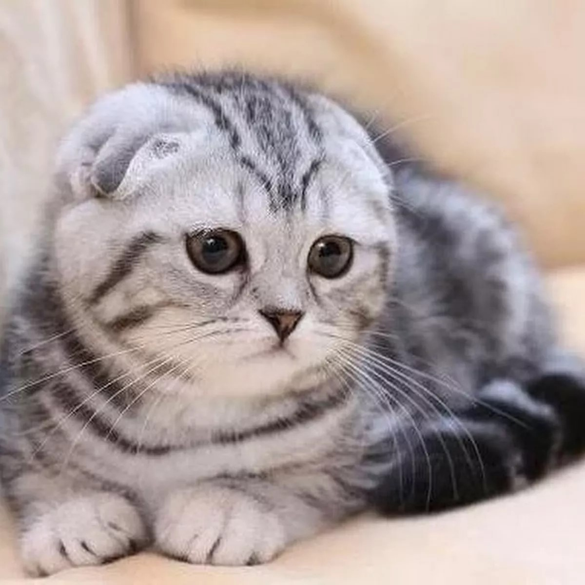
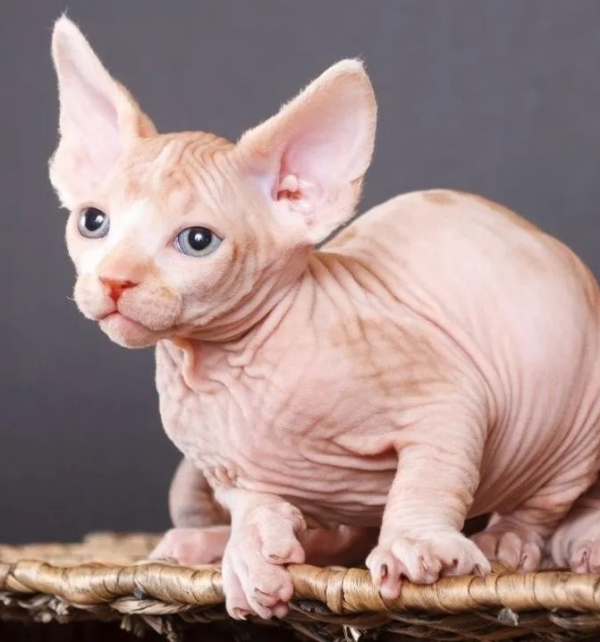
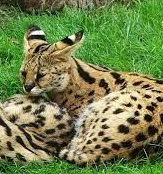

Para muchos amantes de las mascotas, en los últimos años, el gato se ha convertido en el animal preferido en los hogares. Los felinos siempre son el centro de atención pero lo más curioso es que existen muchas razas de gatos de lo que se cree. Desde gatos que no tienen cola, hasta felinos que no poseen pelo ni apenas bigotes, recopilamos para ti las razas de mininos más extrañas del planeta.
Gato Scottish fold: esta raza de gatos llama mucho la atención por sus orejas pequeñas y plegadas hacia adelante en contraste con su cabeza muy redonda. En Gran Bretaña, es prohibido el cruce de un macho y una hembra de este ejemplar.
Gato egipcio: el gato egipcio es una de las razas de felinos domésticos más raras del mundo pues no tiene pelo en el cuerpo. En Muchas ocasiones, carece de sus bigotes. En contraste con su aspecto regio y su expresión seria, el esfinge es un payaso acróbata que no se toma a sí mismo muy en serio.
Gato savannah: este animal fue modificado genéticamente y es fruto de la mezcla de gato doméstico y un serval africano. Sus manchas y su pelaje recuerdan a un leopardo y en cuanto a carácter, puede que se parezca un poco también.
